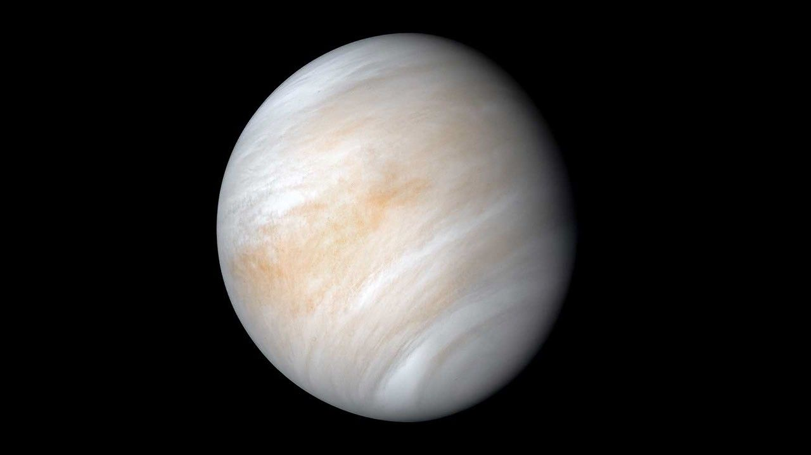
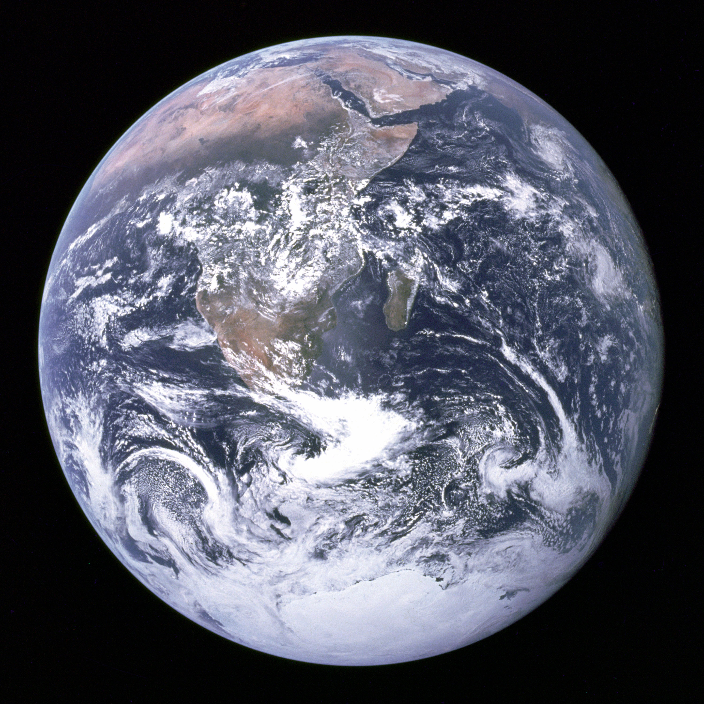
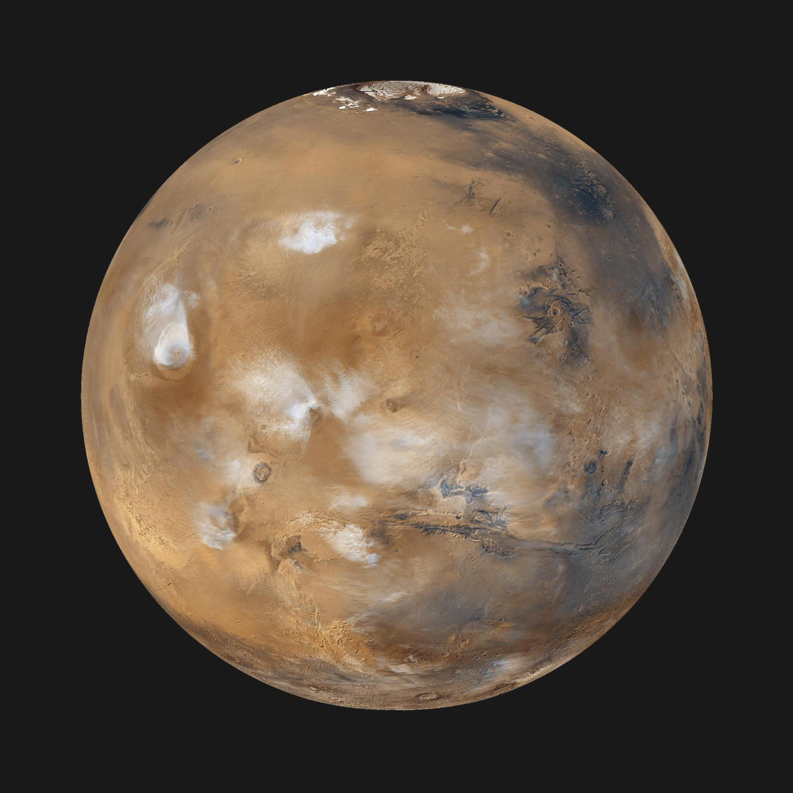
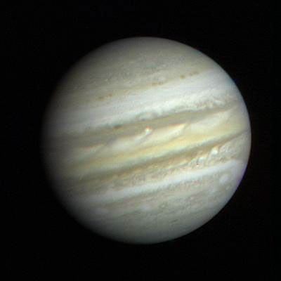
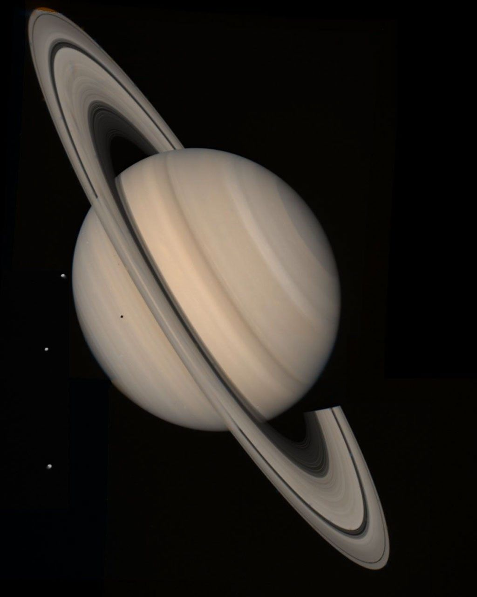

Introdução ao Universo
Na astronomia, o Universo corresponde ao conjunto de toda a matéria, energia, espaço e tempo existente.
Ele reúne os astros: planetas, cometas, estrelas, galáxias, nebulosas, satélites, dentre outros.
O universo é, portanto, mais que um local imenso, ele é tudo, e engloba tudo o que existe. Para muitos, infinito. Note que do latim, a palavra universum significa “todo inteiro” ou “tudo em um só”.
Formação do Universo
Segundo a teoria criada pelo astrônomo George Lemaître (1894-1966), o universo tem uma origem comum, a partir da qual tudo se originou. Esta teoria foi confirmada pelo astrônomo norte-americano Edwin Hubble, que verificou que as galáxias estão em constante expansão e afastamento.
A teoria do Big Bang diz que toda matéria e energia se concentravam em um ponto super denso e quente, conhecido como singularidade. A partir deste ponto, o universo se expandiu num processo conhecido como inflação, que durou uma fração infinitesimal de tempo.
Uma série de transformações continuou a acontecer por bilhões de anos, até a estrutura com que o conhecemos hoje. O universo foi se expandindo cada vez mais, de forma que foi se resfriando, dando origem aos diversos astros.
Planetas do Sistema Solar
Os Planetas são corpos celestes sem luz e calor próprios, esféricos e com gravidade própria, os quais giram em torno de uma estrela, que no caso do planeta Terra é o Sol
Mercúrio

É o menor planeta do Sistema Solar, o mais rápido e mais próximo ao Sol. Em função dessa proximidade, apresenta médias de temperatura de 125 °C, podendo chegar a 425 °C. Completa uma volta ao redor do Sol em 87,969 dias, mantendo sempre a mesma face voltada para ele, formada por um deserto de rochas incandescentes. Sua face oculta é escura e gelada, com baixas temperaturas. A atmosfera é bastante rarefeita.
Vênus
É o segundo planeta mais próximo do Sol. Seu tamanho assemelha-se a Terra, com 12.104 quilômetros de diâmetro. Apesar de mais distante que Mercúrio, apresenta temperaturas de 461 °C. Está circundado por permanentes nuvens de dióxido de carbono, gás que retém boa parte do calor solar. Para girar sobre si gasta 243 dias e seu movimento de translação, com velocidade de 35 km por segundo, é de 225 dias, aproximadamente. O planeta é conhecido por estrela D’alva e visível da superfície da Terra.
Terra
É uma esfera rochosa, com 12.757 km de diâmetro, está distante 149 milhões de quilômetros do Sol. A rotação em torno do seu eixo leva 23 horas, 56 minutos e 4,095 segundos. Arredondando, temos o dia de 24 horas. O movimento de translação ao redor do Sol se completa após 365 dias e um quarto. Com isso, cada quatro anos é bissexto, tem 366 dias. A lua é o satélite natural da Terra.
Marte
É o planeta melhor visível da Terra, da qual está a distância de 62 milhões de quilômetros. Precisa de 687 dias para realizar o movimento de translação, a distância de 218 milhões de quilômetros do Sol. Seu dia tem duração semelhante ao da Terra, 24 horas e 37 minutos. Sua atmosfera é rarefeita e a temperatura varia em torno de zero graus. Marte, seis vezes menor que a Terra, apresenta duas pequenas luas: Fobos e Deimos.
Júpiter
O maior planeta do Sistema Solar, com um diâmetro de 142.700 quilômetros, representa 1.300 vezes o tamanho da Terra. Encontra-se a 779 milhões de quilômetros do Sol. Seu ano tem a duração de quase 12 anos terrestres.
Com a rapidez que gira em torno de si mesmo completa uma rotação em 9 horas e 55 minutos. É formado por um núcleo rochoso, recoberto por uma camada de milhares de quilômetros de gelo.
A atmosfera é composta de amônia e metano, o que o torna bastante semelhante a uma bola de gás. A temperatura é de 130 °C abaixo de zero. Júpiter possui 67 satélites confirmados, sendo o planeta com maior número do sistema solar.
Saturno
Saturno leva aproximadamente 29 anos para completar o movimento de translação. Gira sobre si mesmo em 10 horas e 14 minutos. Com 120.000 quilômetros de diâmetro, é o segundo maior planeta do Sistema Solar. Possui três anéis, formados por milhares de partículas de rocha e poeira. Possui 62 luas, das quais apenas uma, Titã, é maior que a da Terra. É o mais leve dos planetas. Sua temperatura é de 140 °C abaixo de zero.
Urano

Com 53.000 quilômetros de diâmetro, Urano é o terceiro maior planeta do Sistema Solar. A temperatura da superfície do planeta gira em torno de 185 °C abaixo de zero. É envolto por uma nuvem composta de gases. Tem 27 satélites conhecidos, dos quais se destacam: Titania, Oberon, Ariel, Umbrie e Miranda.
Netuno

É o quarto planeta em tamanho, com 14.000 quilômetros de diâmetro. Seu ano equivale a 165 anos terrestres. Realiza uma rotação a cada 15 horas e 45 minutos. O frio em sua superfície é intenso, em torno de 200 °C abaixo de zero. Possui 14 satélites naturais, dos quais se destacam Tritão e Nereida.
Principais Elementos do Universo
Os corpos celestes mais relevantes que fazem parte do universo são:
- Planetas: corpos sólidos e arredondados que não possuem luz e calor próprios. No entanto, cada planeta apresenta uma gravidade própria, os quais giram em torno de uma estrela.
- Satélites naturais: corpos celestes que orbitam os planetas.
- Galáxias: conjunto de planetas, estrelas e gases. O universo tem aproximadamente 100 bilhões de galáxias. Vivemos na galáxia denominada de Via Láctea, onde está o sistema solar.
- Cometas: corpos celestes que possuem pouco massa e órbitas irregulares. O mais conhecido é o Cometa Halley.
- Estrelas: corpos celestes esféricos formado de plasma e que possuem luz e calor próprio, por exemplo, o Sol.
- Satélites: classificados em satélites naturais e satélites artificiais, os satélites são corpos celestes sólidos que orbitam os planetas. O satélite natural mais conhecido é a Lua e o artificial é o satélite Sputnik.
- Buracos negros: estão entre os objetos celestes de maior massa que exercem maior gravidade.
Curiosidade: Você Sabia?
A expressão “Universo Paralelo” faz referência a um conceito de física quântica relacionado com a existência de outros universos e outras realidades ainda desconhecidas.
Esse conceito está intimamente relacionado com a incompreensão e impossibilidade de assimilar a dimensão do universo.